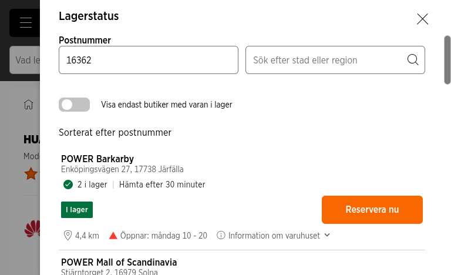

Kontekst: urodziny wtorek 15.09.2026 · prezent do wręczenia wieczorem (pn) lub rano (wt) · poprzedni zegarek: Garmin (padł)
Wymagania: wodoodporność · solidna konstrukcja · bateria ≥ 5 dni · odbieranie połączeń (głośnik + mikrofon) · wersja damska/kobiecy kolor
To dokładnie to, o co prosiłeś: Twój zegarek (GT 6) w wersji 41 mm, biało-złotej — wersja damska. Zweryfikowane dziś rano na Power.se: „Finns i lager”, Click&Collect — odbiór 30 min po rezerwacji, ocena 4,7/5 (43 opinie), 1,32″ AMOLED 3000 nit, bateria do 14 dni (7 typowo, 5 z AOD), rozmowy BT, 5 ATM + płatności Curve Pay z zegarka (NFC).
Dostępne dziś od 10:00 do odebrania po 30 minutach: Power Barkarby (2 szt.), Mall of Scandinavia (1), Täby (1), Kungsgatan (1), Nacka (1) + Uppsala (1). Reszta z 18 varuhus — online.
💡 Chcesz taniej? GT 5 41 mm Guld — 2 189 kr (wyprzedaż starszej generacji, Power) lub najtaniej w ogóle: GT 6 41 mm Lila — 2 737 kr (Amazon.se, wysyłka). Pełna mapa cen → sekcja 9.
| Data | Miejsce | Kwota | Rozliczenie |
|---|---|---|---|
| 08.06.2026 | Power Mall of Scandinavia | 1 999 kr | Privat utlägg |
Jedyne wystąpienie zegarka w Blikku — brak wpisu „DevCode”. Twój GT 6 46 mm poszedł w czerwcowej promocji Power za 1 999 kr (cenówka 41 mm damskiej dziś: 2 986 kr — wyższa cena to aktualna cena katalogowa 41 mm, nie przesadzaj z oczekiwaniem „1999 w 41 mm”).
Trzy pierścienie w Huawei Health (na zegarku i w aplikacji). Dzień „zamknięty”, gdy wszystkie trzy pełne. Dokładnie tak, jak rozumiałeś:
| Pierścień | Co mierzy | Domyślny cel |
|---|---|---|
| 🔴 Move | Kalorie spalone w aktywności (trening, obowiązki domowe, ruch w ciągu dnia) | własny, edytowalny |
| 🟢 Exercise | Minuty aktywności o umiarkowanej/wyższej intensywności | 30 min / dzień (rekomendacja WHO) |
| ⚪ Stand | Godziny, w których byłaś w ruchu / stałaś min. 1 minutę — zmusza do wstawania co godzinę | 12 h / dzień |
Źródło: Huawei Support — „Huawei Health: Activity rings” (starsze modele/bandy: wariant Steps/Exercise/Stand — cel kroków 10 000). Wszystkie aktualne zegarki Huawei z tego raportu mają te pierścienie — Ola dostanie dokładnie tę samą mechanikę „wypełniania kręgów” co Ty. Na watchface widać postęp 3 kręgów w czasie rzeczywistym + medale/wyzwania w aplikacji.

| Sklep | Adres | Stan | Odbiór / godziny (pn) |
|---|---|---|---|
| Power Barkarby — najbliżej Väsby | Enköpingsvägen 27, Järfälla | 2 i lager | po 30 min · 10–20 |
| Power Mall of Scandinavia | Stjärntorget 2, Solna | 1 i lager | po 30 min · 10–21 |
| Power Täby | Attundafältet 2, Täby | 1 i lager | po 30 min · 10–20 |
| Power Kungsgatan — przy pracy (Östermalm obok) | Kungsgatan 27, Stockholm | 1 i lager | po 30 min · 10–20 |
| Power Nacka | Forumvägen 12, Nacka | 1 i lager | po 30 min · 10–20 |
| Power Uppsala | Bolandsgatan 16G | 1 i lager | po 30 min · 10–20 |
| Power Heron City / Länna / Eskilstuna / Västerås | — | inte i lager | — |
Razem „Reservera nu i 18 varuhus” w całej Szwecji. Rezerwacja = Click&Collect na stronie produktu (przycisk „Reservera nu”). Odległości na screenie liczone od kodu 163 62 (Spånga). Barkarby to ~10 min autem z Väsby. Model: 55020FTN.
| Model | Kolor | Cena | Dostępność dziś | Uwagi |
|---|---|---|---|---|
| GT 6 41 mm 🥇 | Vit/Guld (biało-złoty) | 2 986 | 5 sklepów Sztokholm+ / 18 SE | 4,7★ (43) · rekomendacja Datormagazin |
| GT 6 41 mm | Lila | 2 989 | wg Power: 1 varuhus | Alternatywa kolorystyczna |
| GT 6 41 mm | Guld (złoty) | 3 286 | dostępny online | 4,4★ (85) |
| GT 5 41 mm (starsza generacja) | Guld | 2 189 (przecena) | w magazynie | Design j.w. „złoty”, 2 gen. wstecz — opcja oszczędna |
| GT 5 41 mm | Blå | 3 299 | online | — |
| GT 7 41 mm (nowość 02.09) | Rosa / Grå / Blå | ~3 199–3 223 | tylko zamówienie (CDON, Klockmagasinet) | Nie zdąży na dziś/jutro z odbiorem; Power/Elgiganten jeszcze nie mają |
| Watch Fit 5 (budżet Huawei) | Lila / Vit / Svart | ~1 499–1 799 | dostawa (huawei.com/sklepy) | 27 g, 10 dni baterii, rozmowy BT, NFC — ale kształt „opaska plus” |
Ceny GT 6/GT 5 odczytane z meta product:price na stronach Power.se dziś 09:05–09:15. GT 7 41 mm i Fit 5 — wg strony Huawei i pośredników (ceny szacowane).
Twój punkt odniesienia: GT 6 46 mm — 1 999 kr, 21/12/7 dni baterii, rozmowy BT, 5 ATM, HarmonyOS (RTOS — długa bateria, bez codziennego ładowania).
| Model | Rozmiary | Bateria (max / typ / AOD) | Rozmowy BT | Woda | Damskie kolory | Cena SE |
|---|---|---|---|---|---|---|
| GT 7 Pro (nowość 09.2026) | 46 mm | 21 / 12 / 7 dni | ✅ | 5 ATM + IP69 + nurkowanie 40 m | — (żółty/zielony/czarny) | ~4 999–5 499 |
| GT 7 (nowość 09.2026) | 41 / 46 mm | 41 mm: 14 / 7 / 5 dni | ✅ | 5 ATM | 41 mm: Rosa, Grå, Blå | 41 mm ~2 999–3 499 |
| GT 6 — EOL, wyprzedaże | 41 / 46 mm | 41 mm: 14 / 7 / 5 dni | ✅ | 5 ATM | 41 mm: Vit/Guld, Lila, Guld | 2 986 (Power) |
| Watch 5 (2025) | 42 / 46 mm | 42 mm: 7 / 3 / 2 dni | ✅ | 5 ATM + freediving | 42 mm: Beige/Sand Gold (stal 904L); 46 mm: Purpur | ~4 000–5 500 |
| Fit 5 Pro | uni | 10 / 7 / 4 dni | ✅ | 5 ATM + freediving 40 m | Vit (efekt ceramiczny) | ~2 499–2 999 |
| Fit 5 | uni (27 g) | 10 / 7 / 4 dni | ✅ | 5 ATM | Lila, Vit | ~1 499–1 799 |
| Fit 4 (poprz. gen.) | uni | 10 / 7 / 4 dni | ✅ | 5 ATM | Lila | ~1 299–1 499 |
| GT Runner 2 | uni | 14 / 7 / 1,5 dnia | ✅ | 5 ATM | — (sportowe kolory) | ~3 499–3 999 |
| Watch 6 Pro (premiera 09.2026, globalnie) | — | — (krótsza — pełny smartwatch) | ✅ | — | — | — (premium, poza kryteriami baterii) |
Wszystkie mają Activity Rings, GPS, SpO2, sen, HRV. EKG: GT 7 Pro, Watch 5 (X-TAP), Fit 5 Pro, GT Runner 2. Płatności Curve Pay: potwierdzone dla GT 6; wg Huawei część nowszych też wspiera (Fit 5 line wg danych producenta). Ceny „~” = estymowane z huawei.com/se (premiera GT 7 była 02.09 — sklepy dopiero wprowadzają).
| Model | Cena SEK | Bateria realna | Rozmowy BT | Woda | Werdykt |
|---|---|---|---|---|---|
| Garmin Venu 3S 41 mm (Rose Gold) | ~3 700 | ~10–14 dni | ✅ głośnik+mic | 5 ATM | Jedyny Garmin z rozmowami w rozmiarze damskim; ładny, ale cena i… poprzedni Garmin Oli padł |
| Garmin vívoactive 6 | ~3 000 | ~11 dni | ❌ BRAK głośnika/mika | 5 ATM | Odpada — nie odbierzesz połączeń |
| Amazfit Active 2 NFC | ~1 800–2 200 | ~10 dni | ✅ | 5 ATM | Dobra budżetowo, ale w SE głównie wysyłka (Amazon.se) — nie zdąży na dziś |
| Xiaomi Watch S5 / S4 | ~1 500–2 000 | 14+ dni | ✅ | 5 ATM | Odpada — płatności NFC tylko w Chinach; S5 brak w oficjalnej sprzedaży SE |
| Honor Watch | ~1 500–2 000 | ~14 dni | ✅ | 5 ATM | Odpada — Honor wycofany ze Szwecji, brak płatności EU |
| OnePlus Watch 3 | ~2 500–3 000 | 3–5 dni | ✅ | IP68 (nie do pływania) | Odpada — bateria i woda poniżej wymagań |
| Samsung Galaxy Watch 8 | ~2 500–3 500 | 1–2 dni | ✅ | 5 ATM | Odpada — ładowanie codzienne (Wear OS) |
| Apple Watch (SE/S10) | ~2 500–4 000 | ~1 dzień | ✅ | — | Odpada — wymaga iPhone'a + codzienne ładowanie |
Uwaga o płatnościach: Garmin Pay w SE działa z Nordea/Revolut/Curve (nie Swedbank); Huawei Curve Pay przyjmuje karty Visa/MC przez Curve — niezależnie od banku.
Drugie podejście po pytaniu „czemu 3k, skoro mój kosztował 2k?”. Przeskanowano: Prisjakt (agregator, 19 butiker dla GT 6 41 mm),
Power, Elgiganten, Proshop, Amazon.se, CDON, Webhallen, Komplett, Inet, NetOnNet, Kjell, Telia, Telenor, Halebop, Klockmagasinet, uret.se,
huawei.com/se, dcode, sfmobile, dustin, tretti, whiteaway + rynek wtórny (Blocket/Tradera). Surowe dane: memory/research/ola-zegarek-2026-09-14/raw/.
| Sklep | Kolor | Cena | Dostępność | Odbiór dziś / dostawa |
|---|---|---|---|---|
| Power ✅ zweryfikowane na żywo | Vit/Guld | 2 986 | 18 varuhus, 5× Sthlm-area | DZIŚ po 30 min |
| Elgiganten ✅ na żywo | Vit | 2 987 | online 50+ · INTE i butik | dostawa jutro („om 1 dag” do Väsby) |
| Elgiganten | Lila / Guld | 2 990 / 3 287 | online | dostawa |
| Proshop | Vit/Guld · Lila · Guld | 2 990 / 2 990 / 3 290 | wszystkie i lager | 1–2 dni wysyłka |
| Amazon.se | Lila | 2 737 | i lager | wysyłka (jutro niepewne) |
| Amazon.se | Vit/Guld | — brak aktywnej ceny | — | — |
| Sklep z Prisjakt #15063 (ocena 2.9★) | Lila | 2 448 | „i lager” | wysyłka; słabo oceniany sklep — ryzyko |
| CDON | Lila | 2 280 | wysyłka z NL | ~3–7 dni — nie zdąży |
| Sklep z Prisjakt #42149 (3.7★) | Lila | 2 790 | „i lager” | wysyłka |
| Inne (7 ofert) | różne | 2 899–3 299 | mix | 2–8 dni — powyżej benchmarku |
| Opcja | Cena | Na jutro? | Kompromis |
|---|---|---|---|
| GT 5 41 mm Guld @ Power (wyprzedaż) | 2 189 | ✅ pickup dziś (Reservera i varuhus) | starsza generacja: ekran 1 200 nit (vs 3 000), bateria 7 dni (vs 14), starszy sensor HR — ale ten sam design, rozmowy BT, 5 ATM, ringi |
| GT 6 41 mm Lila @ Amazon | 2 737 | ⚠️ prawdopodobnie 1–2 dni | inny kolor (fioletowy), brak pewności „rano jutro” |
| Xiaomi Watch S5 (46 mm) @ buyersclub/Amazon | 1 808–1 856 | ⚠️ wysyłka 2–3 dni | za duży na damski nadgarstek, brak płatności NFC w UE, dostępność sklepowej zero |
| GT 7 41 mm Rosa (nowość) | ~3 199 | ❌ tylko zamówienie | nie ma go fizycznie w żadnym większym sklepie SE — odpada na jutro |
| Garmin Venu 3S Rose Gold @ Elgiganten | 3 984 | ✅ (1 szt. w butiku — rosa) | drożej, mniej funkcji smart |
Research 14.09.2026 08:45–09:56 (runda 1: 3 agenty; runda 2 „deep”: 5+ agentów + weryfikacja w przeglądarce na żywo — Power PDP + Lagerstatus, Elgiganten PDP, Prisjakt full-offer-list). Surowe dane:
~/.openclaw/workspace/memory/research/ola-zegarek-2026-09-14/raw/
Kluczowe linki: GT 6 41 mm Vit/Guld @ Power · huawei.com/se wearables · Activity Rings (oficjalnie) · DC Rainmaker — vivoactive 6
Pełny research alternatyw: oficjalne specyfikacje + recenzje (DC Rainmaker, GSMArena, Notebookcheck, Trusted Reviews, T3…) + realne opinie użytkowników + dostępność SE. Baseline kryteriów: damski rozmiar/kolor · bateria ≥5 dni REALNIE · rozmowy BT (głośnik+mic) · 5 ATM/IP68 · solidne wykonanie · do kupienia na jutro.
| Model | Cena SE | Twarde fakty z researchu | Werdykt dla Oli |
|---|---|---|---|
| GT 7 41 mm (Rosa/Grå/Blå) | od 3 199 (premiera SE 21.09) | Iteracyjny refresh: GPS 32 h vs 25 h, tryby narciarskie/golf, morning-readiness. Bez eSIM i EKG. Geeky Gadgets: „GT 6 owners can skip”. Realnych testów baterii 41 mm jeszcze brak. | Odpada — w sklepach dopiero za tydzień, a upgrade marginalny |
| Watch Fit 5 (Lila/Vit) | 1 809 (18 sklepów) | 27 g, 1,82″ 2 500 nit, 5 ATM, rozmowy BT działają ✅, bateria realnie 5–7 dni, NFC jest ale Huawei Pay nie działa w SE. Forma „opaska”, korpus z aluminium, bez szafiru. | Jedyna tańsza alternatywa — jeśli Ola woli ultralekką opaskę; kompromis: solidność i prestiż vs GT 6 |
| Watch Fit 5 Pro (Vit) | 2 642 (19 sklepów) | Do Fit 5: EKG ✅, szafirowe szkło ✅, GPS dual-band, nurkowanie 40 m. „Ceramiczny korpus” = mit (aluminium + tytanowy bezel). Dopłata NIE poprawia rozmów ani baterii. | Tylko jeśli EKG ważne |
| Watch 5 42 mm (Beige/Sand Gold) | ~4 500–5 500 (unverified) | Najbardziej „biżuteryjny” (szafir + stal, celowo damski rozmiar), X-TAP (ECG/SpO2 z koronki). ALE: realna bateria 3 dni (2 z AOD) — potwierdzone przez 2 niezależnych recenzentów; eSIM w SE tylko Telenor One Number. | Odpada — łamie kryterium ≥5 dni i budżet |
| Watch Fit 4 (biały/srebrny) | 1 161–1 389 (Proshop White 1 290 i lager) | Poprzednia generacja; ciekawostka: ma bezprzewodowe ładowanie, którego Fit 5 nie ma. Lila brak w SE (tylko czarny/biały/srebrny). | Budżetowy fallback |
| GT Runner 2 | ~5 000 | Jeden rozmiar 43 mm tytan, kolory sportowe, UI dla biegaczy. | Odpada — nie jest zegarkiem dla kobiety „na co dzień” |
| Model | Twarde fakty | Werdykt |
|---|---|---|
| Garmin Venu 3S 41 mm Rose Gold / Venu 4 41 mm (nowość!) | Jedyne nie-Huawei z rozmowami BT w rozmiarze damskim. 3S: 3 984 @ Elgiganten; Venu 4 41 mm: 4 590 (Prisjakt). Garmin Pay: Nordea/Revolut/Curve, bez Swedbank. | Realna opcja premium — ale ~1 000+ kr drożej od GT 6, a poprzedni Garmin Oli padł |
| Xiaomi Watch S4 Global / S5 | GSMArena: globalne warianty „Bluetooth only” — zero NFC-płatności w EU (potwierdzone 2×). Rozmiary TYLKO 47,3 mm (S4) i 46 mm (S5) — brak wersji damskiej. Bateria realnie 7–9 dni ✅. | Odpada — za duże, bez płatności |
| OnePlus Watch 3 43 mm | Realnie 2,5–4 dnia (recenzje: PhoneArena, AndroidPolice) — marketing „5 dni” to Power Saver. | Odpada — bateria |
| Samsung Galaxy Watch 8 40 mm | Realnie 1,5–2 dni (GSMArena pomiar ~60 h dla Classic; 40 mm jeszcze krócej). | Odpada |
| Google Pixel Watch 5 41 mm | „Up to 40 hours” (WIRED 2026-08-19) = 1,5–2 dni. | Odpada |
| Honor | Zero oficjalnej dystrybucji zegarków w SE (tylko paski/ładowarki w sklepach z akcesoriami). | Odpada |
| TicWatch Pro 5 | ≥5 dni tylko w „Essential Mode” (dual-screen LCD) — wtedy bez rozmów i aplikacji; Smart Mode realnie 2–3 dnia. Support Mobvoi notorycznie słaby. | Odpada |
| CMF Watch Pro 2 (Nothing) | Ma rozmowy BT, ALE: nie można przełączyć rozmowy telefon↔zegarek (Reddit r/CMFTech) + dedykowany artykuł supportu o „low speaker volume”. | Odpada |
| Amazfit Bip 6 (899 kr) | Plastikowy korpus; zgłoszenia „przyciski/touch padają po pływaniu” mimo 5 ATM (13/320 właścicieli); za duży na wąski nadgarstek; nieosiągalny w SE retail. | Odpada — zabawka, nie prezent |
| Xiaomi Redmi Watch 6 (982 kr) | Zero niezależnych recenzji (GSMArena/Notebookcheck: brak), brak potwierdzonej dostępności w SE. „Watch 6 Lite” (713 kr) w ogóle nie istnieje globalnie — błąd danych katalogowych. | Odpada — niezweryfikowany |
⚠️ Korekta jednego z agentów: wątpliwości co do płatności Curve Pay w SE są bezpodstawne dla GT 6 — Power.se (sprzedawca SE) opisuje Curve Pay wprost na karcie produktu GT 6 41 mm („Ditt befintliga bankkort fungerar; inget separat Curve-kort behövs”). Zweryfikowane na żywo.
Crawl kategorii smartwatch: Power (434 produkty, 108 <3 001 kr — przez API), NetOnNet (37 modeli <3 001), Inet (85 produktów), Elgiganten (asortyment mapowany przez PDP — ich search jest zepsuty). Plus weryfikacja internetowa każdego kandydata (recenzje TrustedReviews/Notebookcheck/PhoneArena/PCMag + manuale Garmin + Reddit) i transkrypcje 8+ recenzji YouTube (yt-dlp auto-subs).
| Model | Dlaczego odpada (źródło) |
|---|---|
| Garmin Lily 2 (1 990) i Lily 2 Active (2 769) | Manual Garmin: „Can I answer calls from Lily 2? No” — tylko caller ID. Bateria ~4-5 dni. |
| Garmin vivoactive 5 / Vivomove / Venu Sq 2 | Garmin support: „does not have the hardware necessary to make/take phone calls”. Głośnik mają tylko Venu 3/4 (+3 984+). |
| Amazfit Active 3 standard (1 990) | Nie ma głośnika/mika (lista wsparcia rozmów Amazfit zawiera tylko Premium/Max/Active 2). |
| Withings ScanWatch Light (2 599) | „Deliberate omission of audio components” — zero rozmów (hybryda, 30 dni baterii). |
| Xiaomi Watch S1 (2 690) | Spełnia technicznie wszystko (rozmowy, 10-12 dni, 5 ATM, szafir), ale to model z grudnia 2021 — za drogo w 2026. |
| Fitbit Versa 4 (2 186) / Sense 2 (2 908) | Rozmowy tylko przychodzące (incoming); platforma umiera (Google uciął 3rd-party apki); Sense 2 też 12,3 mm grubości. |
| CMF Watch 3 Pro (1 290 Inet/NetOnNet) | Głośnik OK (mit obalony — 0/8 źródeł), ALE 13,6 mm grubości (+2,7 ponad limit) i IP68 bez pływania. |
| # | Zegarek | Cena | Dla kogo / dlaczego |
|---|---|---|---|
| 🥇 | GT 6 41 mm Vit/Guld (Power, pickup dziś) | 2 986 | Najładniejsza i najbardziej „prezentowa” opcja: biało-złoty damski, bateria 14/7, rozmowy, 5 ATM+IP69, Curve Pay. Wszystko na co czekasz od prezentu. |
| 🥈 | GT 5 46 mm svart (Power, pickup dziś) | 1 898 | Okazja dnia — ten sam rozmiar co Twój GT 6, bateria 7-14 dni (jak u niego!), pełne rozmowy, 5 ATM. 1 088 kr taniej. Jeśli Ola nie musi mieć małej koperty — hard to beat. |
| 🥉 | Fit 5 Lila / Vit (Power 2 186 / online od 1 809) | 2 186 / 1 809 | Ultralekka (27 g), rozmowy OK, 5-7 dni, NFC hardware. Kompromis: forma opaski, słabsza solidność. |
| 4 | GT 6 46 mm svart / silver-grön (Power) | 2 986 / 2 989 | Dokładnie Twój zegarek, bateria 21/12 — gdyby 46 mm pasował i miała mieć „ten sam”. |
| 5 | Amazfit Active 3 Premium (dostawa) | ~2 700 | Jedyna nie-Huawei z rozmowami <3 000. Zepp app słabsza, dostawa (nie pickup). |
NIE. Zero ofert z Prime 1-day wśród 30+ trafień (6 wyszukiwań). Wszystkie zegarki sprzedają third-party bez Prime (dostawa 3-7 dni). Najniższe ceny na Amazonie (dla potem, nie na jutro): Amazfit Active 3 Premium — 1 595 kr (najtaniej gdziekolwiek — gdzie indziej ~2 700!), GT 6 41 mm Lila 2 737, GT 5 46 mm 1 890, CMF Watch 3 Pro 1 039.
Wszystko używane i głównie stare generacje: Huawei GT3 Pro Titanium — 899 kr (Sztokholm!), Samsung GW6 800 kr, Samsung 46 mm 950 kr, Galaxy Watch5 Pro 1 200-1 500 kr itd. Zero nówek GT 5/GT 6/Fit 5 w zasięgu odbioru dziś. GT3 Pro Titanium za 899 kr to ciekawostka (rozmowy, szafir+tytan, 14 dni), ale to 2021 i używana.